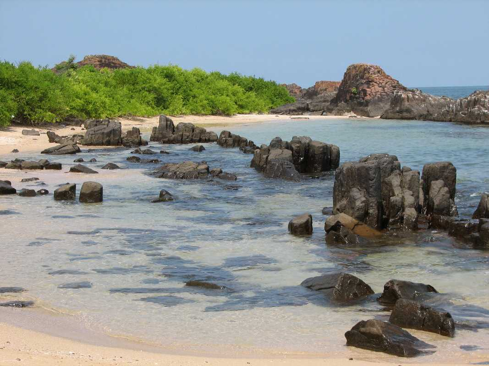
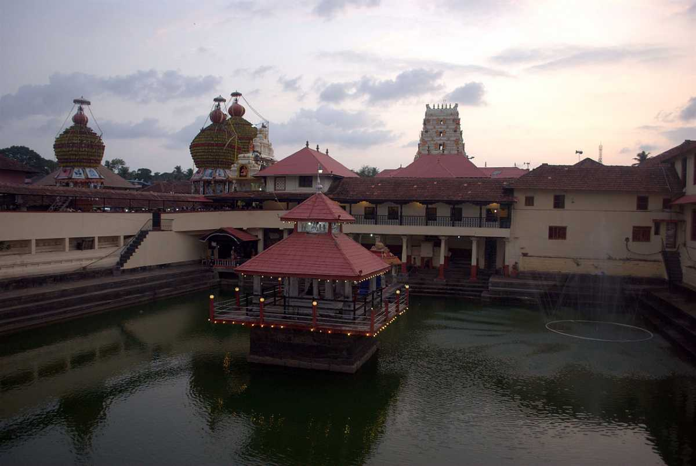
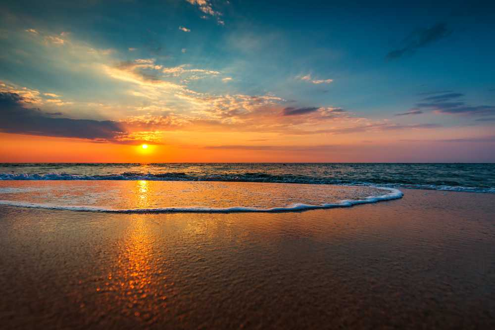
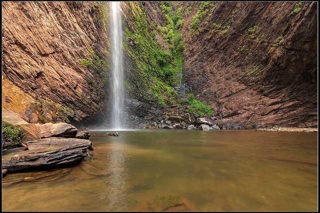
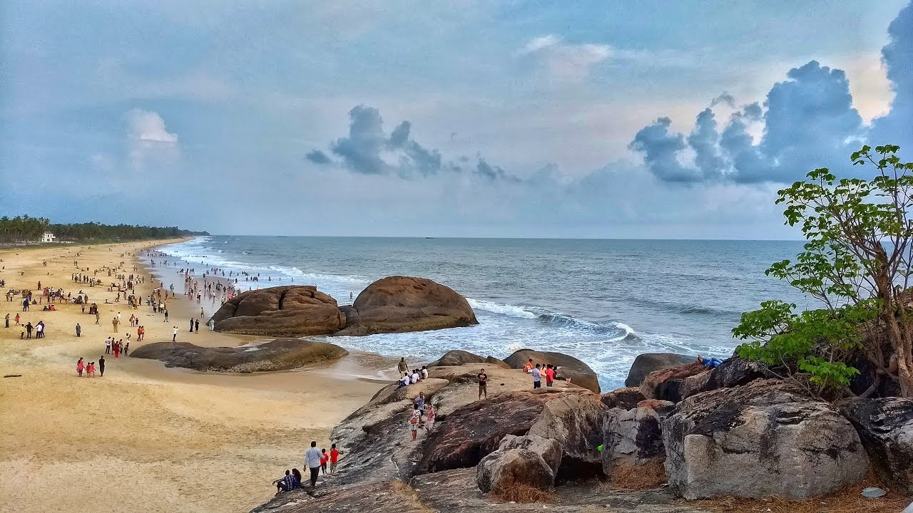

TourKarnataka.com
TOURIST PLACES IN UDUPI
ST. MARY'S ISLAND

The land where Vasco De Gama set his first foot, the land whose geological importance is immense and whose beauty
is spectacular, is St. Mary's Island, Karnataka. A quaint island just off the coast of Udupi, St. Mary's Island is
an island of white sand beaches, rock monoliths and great wildlife making it a mesmerizing place to be in.as one
of the few haul out places for grey seals on this coastline a visit to St Mary’s is a must for watching these hugely
appealing marine beasties – the pups of which are simply adorable.St. Mary's Islands, also known as Coconut Island and Thonsepar, are a set of four small islands in the Arabian Sea off the coast of Malpe in Udupi, Karnataka, India. They are known for their distinctive geological formation of columnar rhyolitic lava (pictured).Located just 4 miles off the coast of Karnataka in the Arabian Sea, St. Mary's Island is a geological treasure and
hosts some of the most beautiful beaches in the country.
Timings: 9:00 AM - 5:00PM Time Required: 1 Hour
Entry fee: 250Rs-300Rs Holiday: No holiday
Best season to go: Rainy season
KRISHNA TEMPLE

Considered to be one of the most famous pilgrimage sites in South India, the Krishna Temple or the Udupi Sri Krishna Matha is one of the most auspicious temples dedicated to Lord Krishna.The Udupi Krishna temple is a storehouse of legends and stories.The Vaishnavite Jagadguru and founder of the Dvaita school of Vedanta, Shri Madhwacharya founded this religious shrine in the 13th century. The idol of Krishna is adorned with jewels and a golden chariot. What makes the temple unique, is its worshipping pattern. The prayers and process of the whole worship take place only through a silver-plated window with nine holes called the Navagraha Kitiki. A temple known as Udupi Anantheshwara Temple surrounds the Shree Krishna Matha. This temple traces back to 1,000 years.The temple bears a resemblance to a living ashram, fostering daily life and devotion. It is also the birthplace of Daasa Sahitya, a Udupi form of literature. Every two years, the administration and temple offerings are managed cyclically between the eight mathas. They are collectively known as Ashta Mathagalu.
Timings: 4:30 AM - 9:00PM Time Required: 30-45 minutes
Entry fee: No entry fee Holiday: No holiday
Best season to go: All seasons
MALPE BEACH

On the top of the list of exquisite unexplored beaches in India is the Malpe beach. It is located at a distance of 66 kilometres from Mangalore and 6 kilometres from Udupi in Karnataka. This scenic beach is popular amongst locals and foreigners alike. The pristine white sand, pleasant weather, and the delectable food shacks here and the plenty water sports options make Malpe Beach an ideal spot for a quick escape. The latest addition to the beach by the authorities are the free wifi facilities that is available 24 x 7! Malpe is an ancient sea port and harbour, where Tuluvas and the western world traded. Malpe has been mentioned as early as the second century C.E. by the Greek geographer Ptolemy. The location is also mentioned in an ancient Greek farce found written on papyri from the second century or earlier, published in modern times in The Oxyrhynchus Papyri Part III.
The vast coastline of this hidden gemstone of Karnataka has four rocky islands. The northern-most island is the Daria-Bahadurgad, the middle one is the Daria-Gadara-Kallu, while the southernmost island is the Kari-Illada-Kallu.
Timings: 9:00 AM - 6:00PM Time Required: 45 minutes
Entry fee: 40Rs Holiday: No holiday
Best season to go: Rainy season
KUDLU FALLS

Located at a distance of about 42 kms from Udupil, the Kudlu Theertha Falls lies in the dense forest of the Western Ghats of India.Also known as Sita Falls, Kudlu Falls is famous for its picturesque beauty. The waterfall cascades down the Western Ghats from a height of 150 feet in the midst of a dense green cover of the hilly terrain. It requires a moderate level of trekking through the green zone to reach the enchanting waterfall. The attraction is, thus, a favourite amongst trekkers and nature lovers.
The falls are known to originate from River Sita and be one of its first falls.The water of the falls plunges down from a breathtaking height of 300 feet. After its graceful fall the water is collected in a pond. The water of the falls plunges down from a breathtaking height of 300 feet. After its graceful fall the water is collected in a pond. People believe the pond to be holy and sacred and it is said that since ages sages and saints have been visiting the pond and choosing it as their place to pray for Moksha.
Timings: 9:00 AM - 4:00PM Time Required: 30 minutes
Entry fee: 50Rs Holiday: No holiday
Best season to go: Rainy season
KAUP BEACH

Mangalore was developed as a port city located on the shores of the Arabian Sea amidst the backwaters of the rivers Netrapathi and Gurupura.Nice, clean and beautiful beach offering a panoramic view of the Arabian Sea.Kaup Beach is a wonderful shoreline arranged near NH17 between Udupi and Mangalore. It is situated at a separation of 16 Kms from Udupi Railway Station. The beacon arranged on a hillock at the northern end of the shoreline is a lovely sight to watch. The shoreline is a quiet place with nature's excellence in wealth. Great to view the sun setting behind the ocean. Named after the Hindu goddess Managaladevi, Mangalore remains one of the busiest ports in the country along the Malabar Coast.With a host of languages including the likes of Tulu, Kannada, and Konkani being spoken here, the city retains its old world charm and beckons a variety of tourists, thereby proving its worth as an ideal weekend getaway.A must-visit beach in the area, this might just be one of the most beautiful destinations of the town.
Timings: 9:00 AM - 5:00PM Time Required: 30 minutes
Entry fee: No entry fee Holiday: No holiday
Best season to go: Rainy season